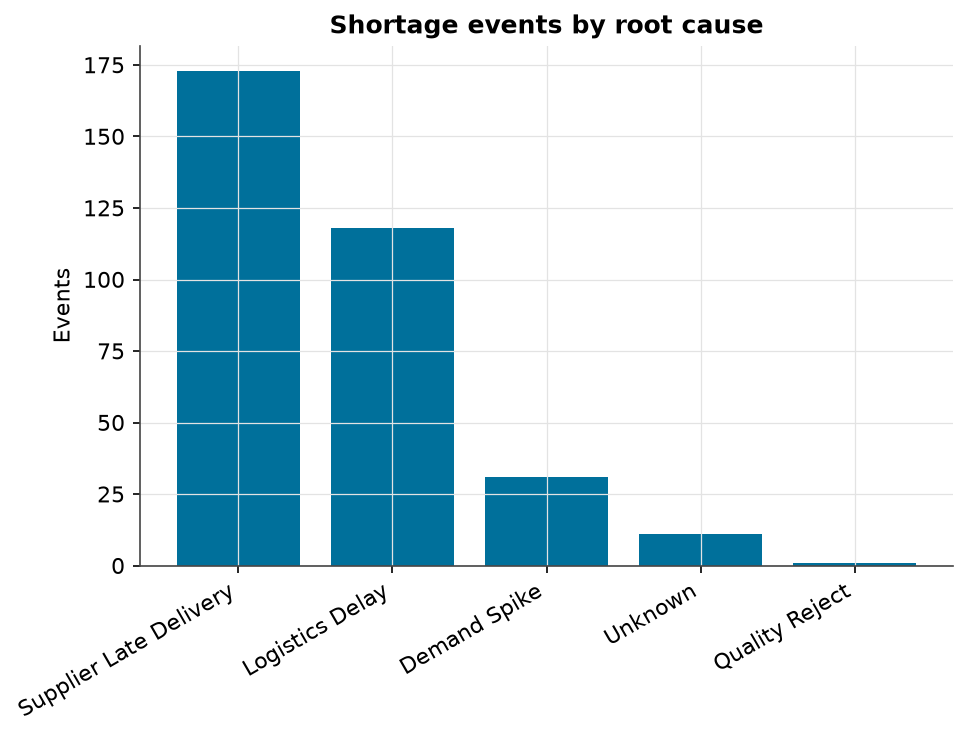
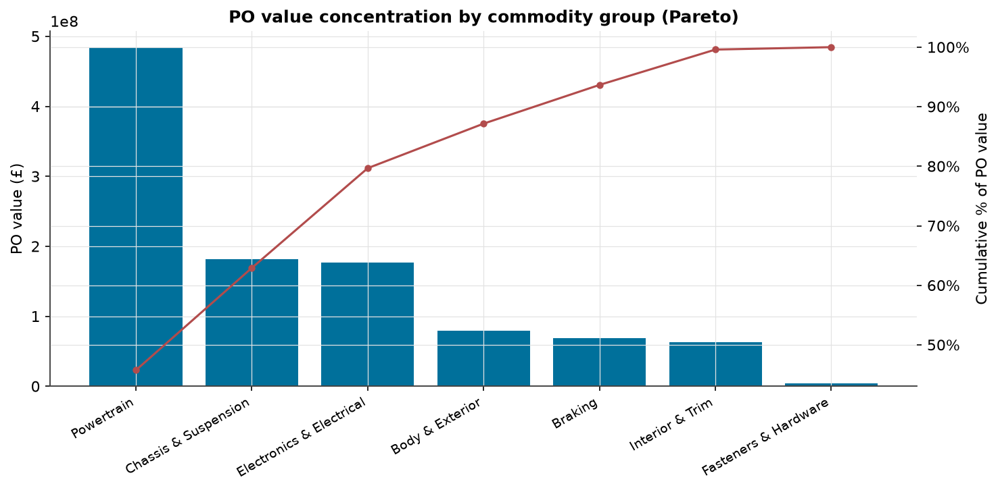
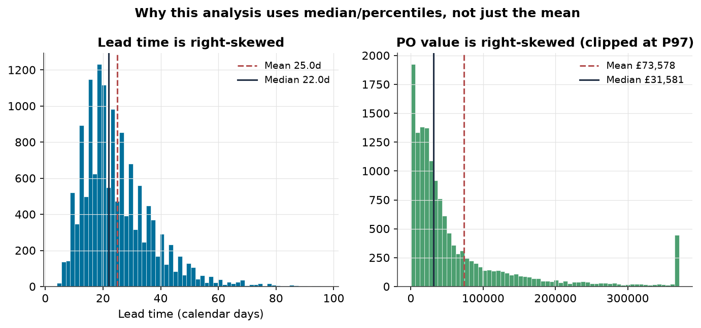
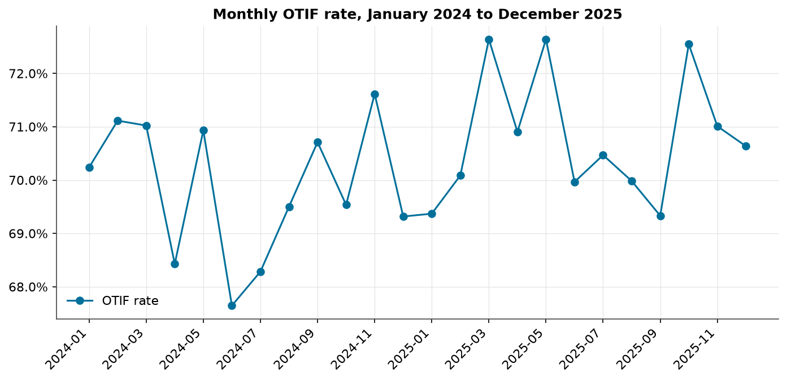

Are Arden's worst-performing suppliers actually unreliable — or are they just stuck with harder parts to deliver? An end-to-end analysis across Excel, SQL, Python and Power BI on 14,403 purchase orders from a fictional premium vehicle manufacturer's two-year, 30-supplier component supply chain.
Every figure below is exactly across the Excel workbook, every SQL script and the Python notebook.
Arden is a made-up premium UK vehicle manufacturer, used here to practise a real supply-chain analytics workflow end to end. Its two worst-performing suppliers stay its two worst-performing suppliers even after fairly adjusting for how hard the parts they supply actually are — their poor delivery record is real, not an artefact of a tough job.
Along the way, the same analysis found a supplier whose sudden five-month slump turned out to be an isolated, fixable episode rather than a trend, confirmed that on-time delivery barely moved across the whole network year on year, and found that rushed shipping costs three and a half times more than standard freight while eating over half the freight budget — despite being only a quarter of all shipments.
Some suppliers' rankings do shift a lot once you account for job difficulty — one moves by seven places. But the two suppliers with the worst on-time-in-full delivery records, Cliffgate Logistics Components and Kestrel Precision Components, are still the two worst performers after that adjustment. Their poor delivery record is real, not an excuse.
Kestrel's components are the hardest mix of any major supplier — nearly three-quarters are rated Critical or High criticality, roughly double the network average. If a hard job were the whole story, adjusting for it should make Kestrel look meaningfully better. It barely moves.
Solmar's components lean toward the easier end of the difficulty scale, not the harder end. Yet its on-time-in-full record is nearly identical to Kestrel's, and adjusting for job difficulty doesn't help it either — this is the cleanest example in the whole dataset of a supplier whose weak record can't be blamed on what it was asked to supply.
Ashcombe Precision delivered normally for most of the two-year period, then its on-time-in-full rate fell off a cliff for five months running, right at the end of the data. That kind of sudden, isolated drop is usually more fixable than a slow, structural decline — it points to a specific, recent problem worth a direct conversation.
Zoom out from any one supplier, and the network's overall on-time-in-full rate was essentially flat between 2024 and 2025. A formal check confirms the small change is easily explained by chance, not a real network-wide trend — concern about “declining performance” belongs at the supplier level, not the portfolio level.
When a part has to be shipped by air to catch up on a late delivery, it costs far more than shipping it the normal way. These rushed shipments are a minority of all shipments, but they're eating the majority of the money spent on freight.
Across the whole network, the share of stock checks showing dangerously low inventory cover is small. But a group of 20 components sit below their safety-stock level nearly half the time, and one plant carries more of this risk in its most critical components than the other two.
When production-risk events were traced back to a cause, the overwhelming majority came down to suppliers delivering late or shipments being delayed in transit. Getting the demand forecast wrong was a minor factor by comparison.
Arden is a fictional premium UK vehicle manufacturer experiencing component shortages, late deliveries, volatile lead times and expensive expedited freight. Management wanted to know which suppliers genuinely create production risk, which components are most likely to disrupt production, where inventory cover is dangerously low, whether shortages are driven by supplier reliability or demand changes, and where expedited freight is increasing cost.
One rule was non-negotiable: no supplier could be labelled a poor performer without first checking whether its raw delivery record still held up once the difficulty of the components it actually supplies was taken into account.
| Coverage | 30 suppliers, 650 components, 3 manufacturing plants, multiple commodity groups and criticality tiers |
|---|---|
| Period | January 2024 – December 2025 (24 months) |
| Purchase orders | 14,403 (canonical, processed layer) |
| OTIF-eligible orders | 14,383 (used for on-time-in-full rate calculations) |
| Shipments | 14,418 |
| Inventory stock snapshots | 23,925 (monthly stock-level checks across components and plants) |
| Shortage / production-risk events | 334 |
Each tool answers a different part of the brief, but every headline number reconciles exactly across all of them. Lead time and purchase-order value are both right-skewed (see the gallery below), so medians and percentiles are used throughout rather than simple averages.
The interactive chart above (Headline Numbers) shows raw vs. case-mix-adjusted OTIF for all 30 suppliers, sorted from best to worst raw performer. The table below names the specific suppliers this analysis turned out to be about.
| Supplier | Raw rank | Adjusted rank | Interpretation |
|---|---|---|---|
| Kestrel Precision Components | 29th of 30 (49.2%) | 28th of 30 (47.4%) | Genuinely harder mix (72.9% Critical/High vs. 36.3% average) — but adjustment barely moves it; poor record stands even after accounting for the harder job |
| Solmar Fasteners Ltd | 26th of 30 (50.9%) | 27th of 30 (47.9%) | Easier-than-average mix (67.5% Medium/Low criticality) — adjustment makes its position slightly worse, not better; the cleanest genuinely-poor-supplier case in the dataset |
| Cliffgate Logistics Components | 30th of 30, worst raw OTIF (46.8%) | 26th of 30 (51.7%) | Adjustment does lift Cliffgate meaningfully (+4 ranks) — but it's still bottom-tier even adjusted; forms the other half of the “two worst suppliers stay worst” finding |
| Ravensworth Chassis | 15th of 30 (80.0%) | 8th of 30 (83.3%) | The single biggest mover in the whole supplier set (+7 ranks) — proof the adjustment is meaningful generally, just not for the two worst performers |
Every shortage/production-risk event was traced back to a single primary cause. The result answers the "supplier reliability vs. demand changes" question management asked directly.

The interactive chart above (Headline Numbers) compares average standard vs. expedited shipment cost. The chart below breaks total freight spend down by commodity group.



Source files for this project are organised as shown below (not yet published to a public GitHub repository). Every deliverable reconciles to the same figures shown on this page.
See also: 08_outputs/executive_summary/ for the full written analysis and 09_case_study/portfolio_case_study.md for the source of this page.